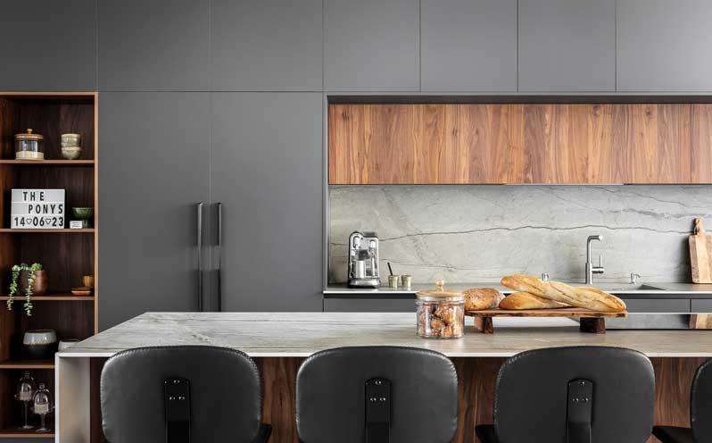

How to mark: 1) pick a surface · 2) Include = the area that WILL change to the new texture: click around it, finish by clicking the first
point or double-click · 3) Exclude = a hole inside Include that stays the original photo: do the same around objects on top (food, faucet) ·
4) Test texture (checkerboard, to check the edges) or Preview (real product) · 5) changes are autosaved as a draft. Angled surface (counter, floor)? More → Auto perspective.
Mistake? Esc cancels the shape you are drawing · Ctrl+Z undo ·
click a shape then Delete · drag the dots of a selected shape to fix it.
Tip: follow the edge slightly inside the surface.